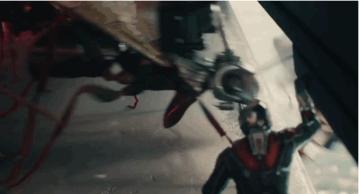

Black Panther
El heredero del trono Wakandiano debe luchar contra otro aspirante al trono que pretende llevar la tecnologia de Wakanda a todas las comunidades negras del mundo para que estas inicien una guerra contra quienes siempre los han oprimido.

Ant Man
Como prueba de sus habilidades para el doctor Hank Pym, Scott Lang entra en la mansión de los vengadores para robar un articulo que servirá para detener los planes de Darren Cross de vender un traje similar al de Ant Man a militares extranjeros.